History of Augmented Reality
History of AR
Different sources trace the history of augmented reality back to the beginning of the 20th century, but it can be said that seminal work was done in the 1960s by Ivan Sutherlands and others. The term augmented reality however was coined by Thomas P. Caudellin the 80s according to [^1] (Lee, Kangdon (March 2012). “Augmented Reality in Education and Training” (PDF). Techtrends: Linking Research & Practice to Improve Learning. 56 (2).)
Ancient precursors
In 1584, Giambattista della Porta publishes a book entitled ‘Magia Naturalis’, in which he presents the concept of a room in which you have a glass pane set up in a way that it reflects light bouncing off of objects in a different position, creating the illusion as if these objects were somewhere else than they actually are. This is pretty much earliest description of Augmented Reality we have discovered so far, and the principle of reflection off a semi-transparent mirror is still popular today for head-mounted displays, albeit slightly miniaturised.
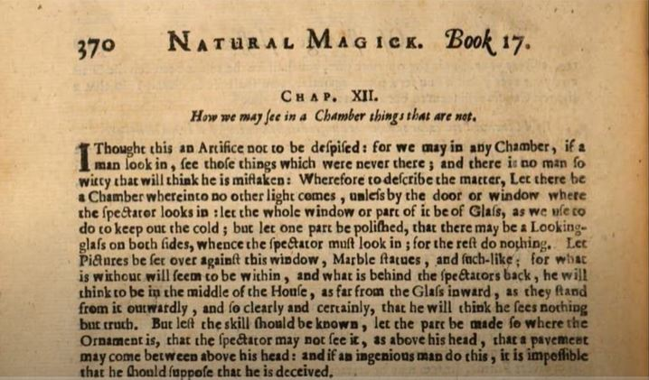
Let there be a chamber wherein no other light comes, unless by the door or window where the spectator looks in. Let the whole window or part of it be of glass, as we use to do to keep out the cold. But let one part be polished, that there may be a Looking-glass on bothe sides, whence the spectator must look in. For the rest do nothing. Let pictures be set over against this window, marble statues and suchlike. For what is without will seem to be within, and what is behind the spectator’s back, he will think to be in the middle of the house, as far from the glass inward, as they stand from it outwardly, and clearly and certainly, that he will think he sees nothing but truth. But lest the skill should be known, let the part be made so where the ornament is, that the spectator may not see it, as above his head, that a pavement may come between above his head. And if an ingenious man do this, it is impossible that he should suppose that he is deceived.
In 1862, John Henry Pepper (1821-1900) and Henry Dircks (1806-1873) create an illusion (projection) technique, called Pepper’s ghost, used in the theater.
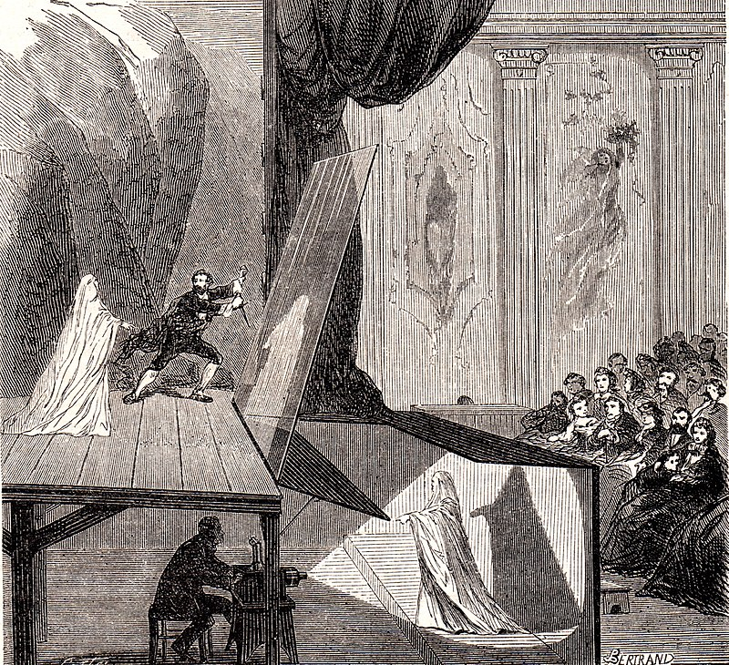
The basic trick here is that there are two rooms built on the stage, one that people can see into, the other one (called blue room) that is hidden. For the illusion, you set up a big glass in the main room at 45 degree angle that is able to reflect the view of the blue room towards the audience in order to project ‘floating’ ghost objects onto the spatiality of the twin room.
Dircks had come up with the idea, but failed to market it. Pepper teamed up with him, modified the lay-out (reducing installation costs), and made it popular.
The technique is still in use for modern projection AR, in particular in theatres (using silver-threaded gauze and short-throw projectors instead of glass and lighting objects in order to avoid the need for a twin ‘blue’ room).
In 1958, early head-up displays (HUDs) are used for the military, in fighter planes, superimposing graphics onto the real world by projecting onto a glass plane in the field of view of the pilot. This requires the pilot no longer to look ‘heads-down’ at the instruments, hence the name ‘heads-up’. This way, AR can display on any transparent display.

In 1945, head-mounted display history was written, when Henry McCollum patented the first Stereoscopic Television Apparatus.
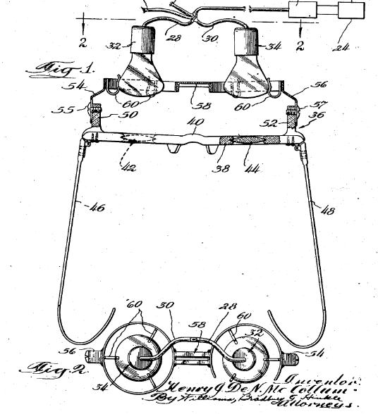
In 1960, Morten Heiling also patented a stereoscopic television HMD for individual use. By many, this device is seen as the mother of all smart glasses, highlighting its importance (together with Heilig’s Sensorama for VR) as a milestone in the history of computing.
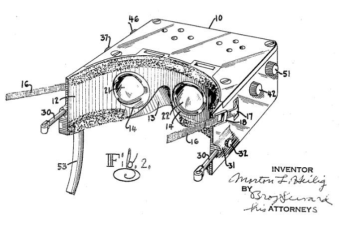
In 1961, Philco’s Headsight-Remote Camera Viewing system came out. The helmet included a video screen and tracking system.
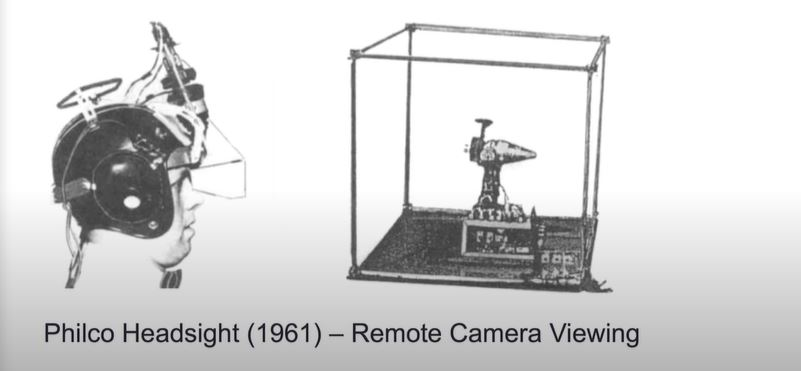
In 1968, Sutherland and Sproull developed the ‘Sword of Damocles’ that is the first augmented reality head-mounted display (HMD) and tracking system.

In the 1960ies and 1970ies, the US Airforce develops several versions of helmet-mounted displays (HMD) in aircraft to project data in front of pilots’ eyes.
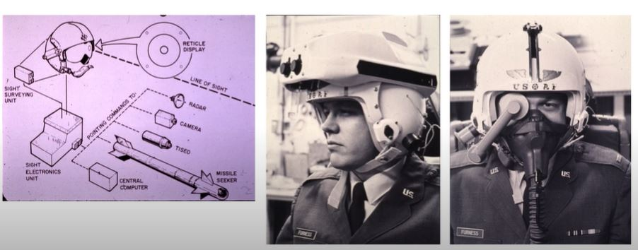
1980ies, the concept of AR is picked up by the film industry, embedding the idea into the story line of works such as ‘The Terminator’ (1984), ‘Robocop’ (1987), and ‘They live’ (1988).
In 1992, the term “Augmented Reality” was coined at Boeing in a publication by Thomas P. Caudell and David W. Mizell.
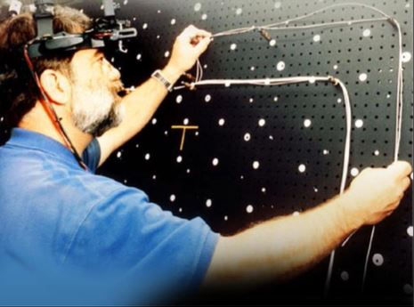
In 1992, virtual fixture was the first immersive Augmented Reality system in order to improve immersive experience.
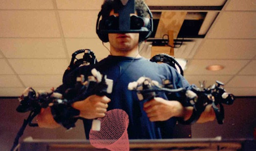
In 1994, Azuma develops the motion stabilized display for outdoor use and it is marker-based tracking technology.
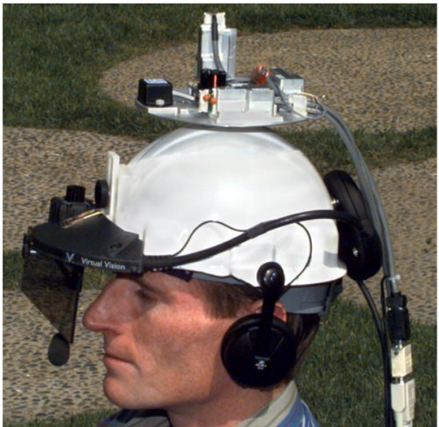
In 1995, fiducial tracking in video was introduced by Bajura and Neumann.
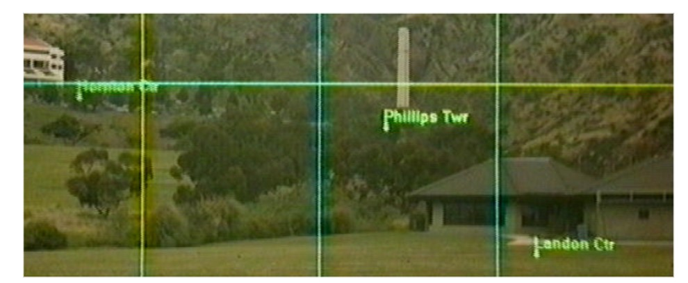
In 1996, UNC hybrid magnetic-vision trackers are developed, providing an accuract and robust tracking system for AR application.
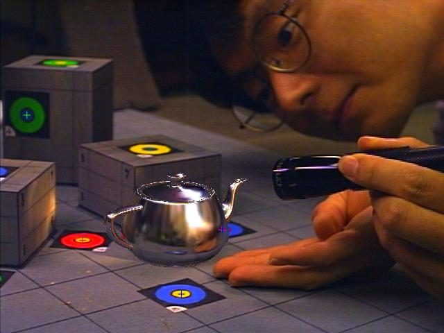
In the same year, the MIT wearable computing group founded by Steve Mann, experimenting with smart glasses, amongst others.
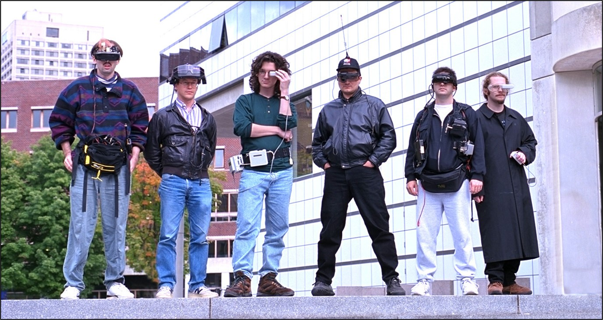
In 1997, the Touring Machine sees the light of day, a 3D mobile augmented reality systems for exploring the urban environment, developed by Steven Feiner, Blair Maclntyre, Tobias Hoellerer, and Anthony Webster. It uses a backpack with laptop and a head-mounted display.
In 1999, ARToolKit is released, the first open source tracking library.
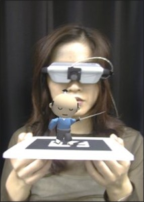
In 2001, the first attempt to build an AR browser with web technology took place, Real World Wide Web, later leading to Argon (2009).
In 2007, “A team led by Markus Kahari unveiled a prototype of the system at the intentional Symopsium on Mixed and AR. The team added a GPS sensor, a compass, and accelerometers to a Nokia smart phone” reported by MIT technology review.
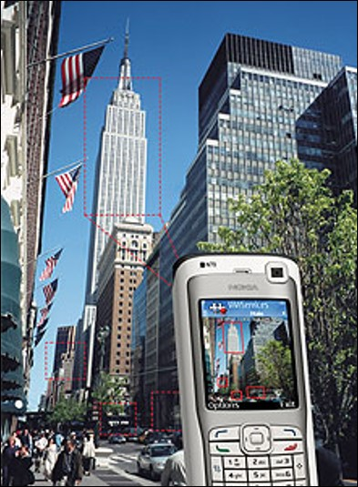
In 2008, Wiktibude is a mobile AR technology providing location-based AR experiences.
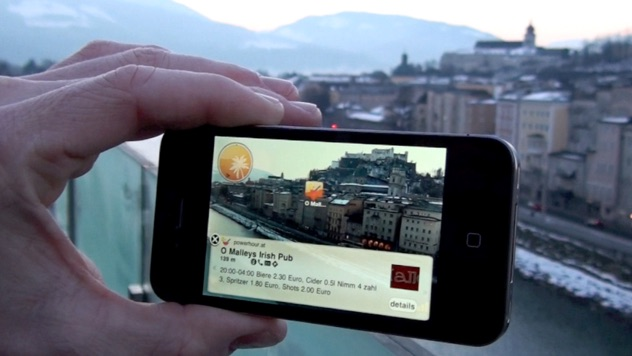
In 2009, the LAYAR company was founded, allowing to layer magazine covers and other print media with an overlay AR experience on mobile phones.
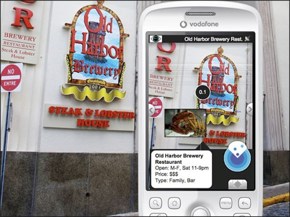
The same year, Argon is released, the first open technology browser for Augmented Reality, built using web technology.
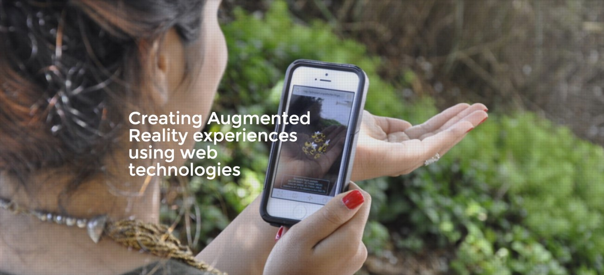
ARToolKit moves over to Flash, opening AR to the 1.6 billion web users, developers, also providing mature development tools.
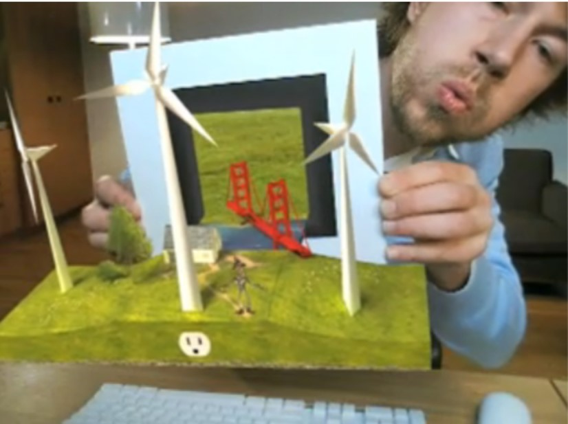
In 2011, Blippar creates compelling Augmented Reality experiences.
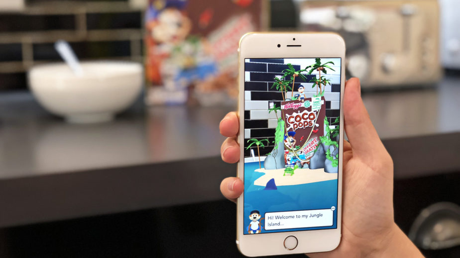
In 2011, the first smart glasses were created by Google.
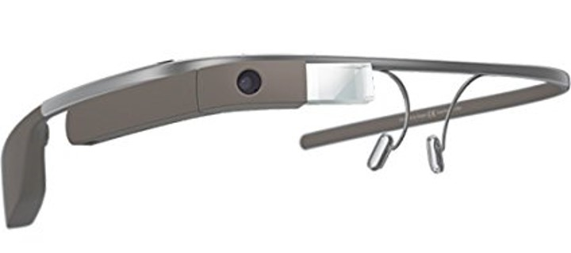
In 2014, Google Tango was designed for a standalone mobile platforms.
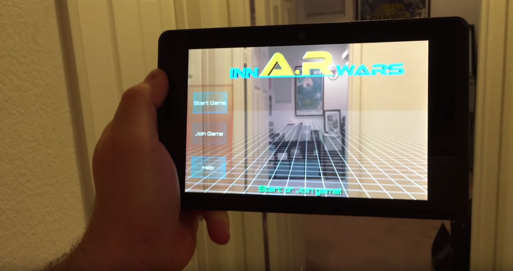
In 2014, DAQRI’s smart helmet is a novel stereoscopic wearable device to see the real world overlaid with computer.
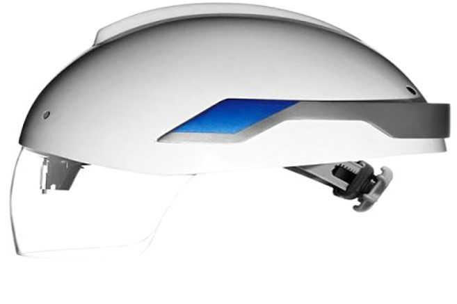
In 2014, Meta One starts to ship, the first high quality AR headset. Although plans are for a standalone version, the developer kit device is still tethered. With Steve Mann advising the company, and Jayse Hansen, the designer behind Iron Man’s holographic interfaces, guiding the company to develop natural user interaction that shall become industry standard for future developments.
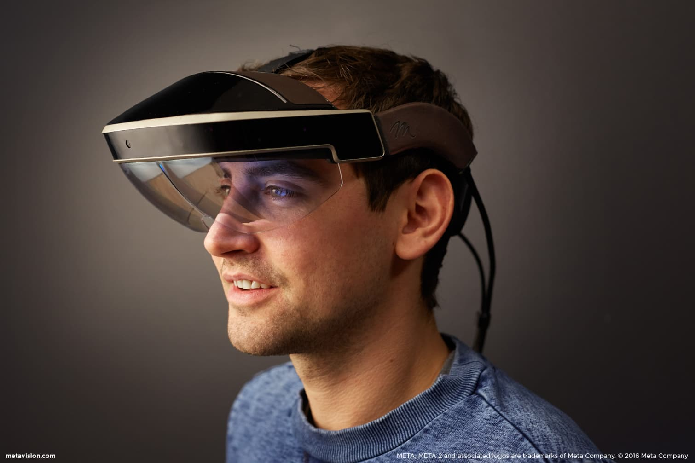
In 2015, Vuforia is released by Qualcomm, an Augmented Reality software development kit (SDK) for mobile devices.

In 2015, Microsoft HoloLens was released. It is the first headset Augmented reality equipment with a self-contained Window 10 computer and depth mapping, a breakthrough in smart glasses technology.

In 2016, the Magic Leap One is unveiled, a competitor to the Hololens.
In 2016, the AWE media platform is released as the first and only web-based immersive VR and AR.
In 2017, Apple’s ARKit is launched, the Augmented Reality platform for IOS devices.
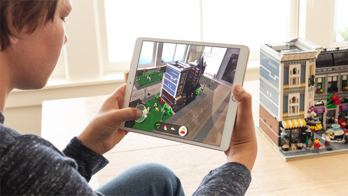
In 2017, Chinese companies such as Baidu and Tencent, unveil DuMiX AR and Tencent TBS AR for creating their own software development kit.
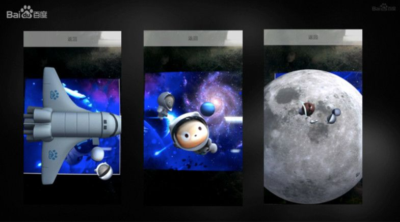
In 2017, ARCore was released by Google. It is a platform to build Augmented Reality experiences for Android devices.
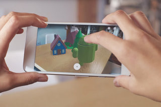
In 2019, Microsoft Hololens 2 starts shipping.
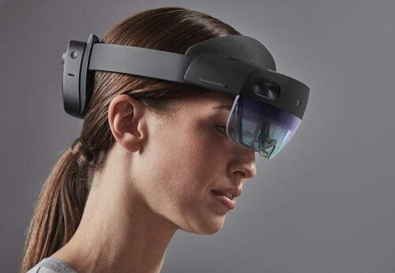
Timeline
- Sword of Damocles (1965)
- Augmented Reality terminology (1990s)
- Virtual Fixtures (1992)
- First AR Report by R. Azuma (1997)
- Sportvision 1st & Ten (1998)
- ARToolkit (1999)
- RWWW (2001)
- Wikitude (2008)
- SixthSense MIT (2009)
- Argon & Layer (2009)
- Blippar (2011)
- Magic Leap (2011)
- Meta & Google Project Glass (2012)
- Google Project Tango (2014)
- ArUco (2014)
- Vuforia (2015)
- Microsoft HoloLens (2015)
- Meta2 (2016)
- Epson Moverio BT-300 (2016)
- awe.media Platform (2016)
- Pokemon Go (2016)
- Camera Effects Frame Studio by Facebook (2017)
- Apple ARKit (2017)
- Tencent TBS AR (2017)
- DuMix AR (2017)
- AR.js (2017)
- Google ARCore (2017)
- WebARonARKit iOS / WebARonARCore Android (2017)
- Magic Leap One (2017)
- Web VR Editor’s draft (2017)
- Web XR Editor’s draft (2018)
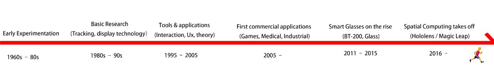